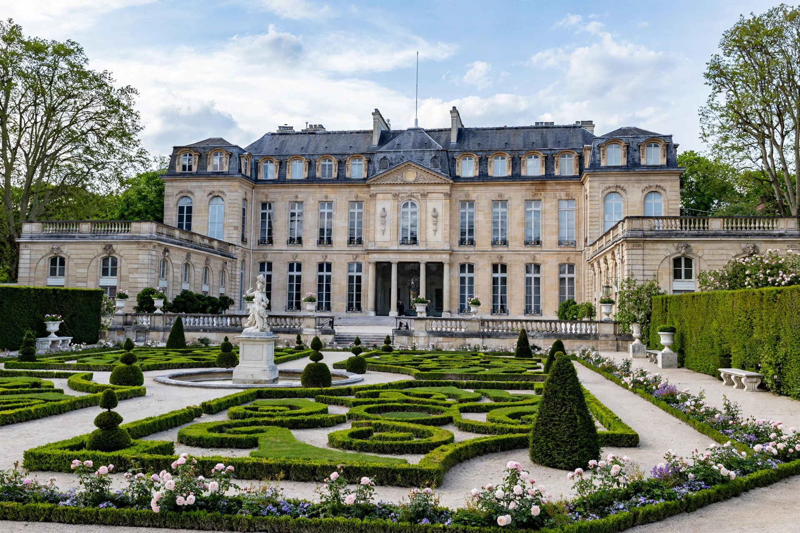

| Prime Minister of the French Republic Premier ministre | |
| Appointer | The President of France |
|---|---|
| Residence | Hôtel Matignon, Paris |
| First holder (Fifth Republic) | Michel Debré (1959) |
| Formation | Constitution of 4 October 1958 |
The Prime Minister of France (French: Premier ministre) is the head of government of the French Republic. Appointed by the President, the Prime Minister directs the action of the Government, is responsible for national defence administration, ensures the execution of the laws, and exercises regulatory power. The office carries no fixed term; the Prime Minister serves at the intersection of presidential confidence and the confidence of the National Assembly.
Articles 20 and 21 of the Constitution of the Fifth Republic provide that the Government determines and conducts the policy of the nation, and that the Prime Minister directs its action. In practice the balance depends on politics: when the President's camp controls the National Assembly, the Prime Minister implements the President's programme; during "cohabitation", when the Assembly majority opposes the President, the Prime Minister becomes the effective centre of domestic policymaking. The National Assembly can force the Government's resignation through a motion of censure (Article 49), and the Prime Minister may engage the Government's responsibility on a bill under Article 49.3, which is then deemed adopted unless a censure motion succeeds — a provision whose use on budget legislation has repeatedly been controversial.
The first Prime Minister of the Fifth Republic was Michel Debré (1959–1962). Georges Pompidou (1962–1968) is the longest-serving holder of the office under the Fifth Republic. Édith Cresson (1991–1992) was the first woman to hold the post, and Élisabeth Borne (2022–2024) the second. In the turbulent period after the snap legislative elections of 2024, the office changed hands several times in quick succession: Gabriel Attal was followed by Michel Barnier, then by François Bayrou in December 2024, and by Sébastien Lecornu in September 2025.